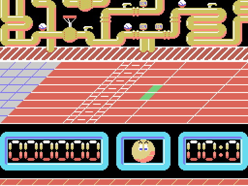
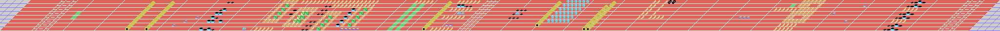
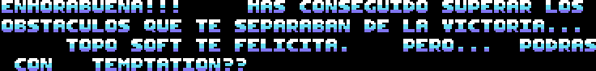

Ale Hop! is an obstacle race. You steer a grinning ball down six horizontally scrolling tracks, jumping whatever gets in the way and picking things up, with the clock against you.

The credits come from the game's own title screen, reconstructed by decompressing the graphics out of the binary:
PROGRAMA: ALBERTO L. NAVARRO GRÁFICOS: LUIGILOPEZ TOPO SOFT 1988
The three horizontal bands aren't a design flourish — they're the three the MSX SCREEN 2 mode hands you. That mode splits the display into three eight-row thirds and gives each its own pattern and colour tables, which is how you get 768 distinct tiles on screen instead of 256.
| rows | what goes there | source |
|---|---|---|
| 0-7 | The background, repeating four times | 64x8 map at 0x3000 + level*0x200 |
| 8-15 | The playable track | 256x8 map at level*0x800 |
| 16-23 | The scoreboard | fixed 32x8 map at 0x4500 |
Both blit routines read the same variable — the camera column at 0xDB54 — but the track's uses the whole byte, with its 256-column map, and the background's does and 0x3F on it, with a 64-column one.
It is tempting to read a parallax into that, and this page used to. But a mask does not slow anything down: the column goes up by one for both of them, so the background advances at exactly the same rate as the track. What the and 0x3F does is wrap it round at 64, so the same background repeats four times per level. To go four times slower you would need a shift — two rrca — not an and.
Each level is a 256-column strip of which you only ever see 32. Laid out whole, this is level 1:

In each map byte, the low 6 bits say how the tile behaves and the top 2 pick which of four graphics banks it uses. That's why every level looks like a different game even though the engine is identical: the bank changes, the code doesn't.
There are 15 terrain classes, derived by comparing the low 6 bits against a threshold table at 0xDACE:
0C 10 14 18 19 1A 20 22 24 26 28 32 38 3E FFNine of those classes have consequences. Some tiles stop you dead — the camera snaps back 40 columns — others are collectibles worth 375 points that vanish when touched, some add time, one grants an extra life up to a maximum of four, and some kill you.
Input goes through GTSTCK, checking the cursor keys first and then joystick 1, so both work.
The ball is a multicolour sprite on a machine that doesn't have them. The MSX1 allows exactly one colour per sprite, so the game stacks three sprites — one per colour: black, white and light yellow — at the same position. All three are rebuilt every frame, reading their colours from 0xDB6E.
The bouncing ball on the title screen uses the same trick.
Seven score digits, the character's face, and a timer. The panel is a fixed map blitted once when the stage starts; the digits are written on top of it.
Clear level 6 and you get a screen with a scrolling message:

ENHORABUENA!!! HAS CONSEGUIDO SUPERAR LOS OBSTACULOS QUE TE SEPARABAN DE LA VICTORIA... TOPO SOFT TE FELICITA. PERO... PODRAS CON TEMPTATION??
("Congratulations!!! You've overcome the obstacles that stood between you and victory... Topo Soft congratulates you. But... think you can handle Temptations?")
The text isn't drawn into the screen: it's written at runtime, letter by letter, by a smooth-scrolling routine. And the sign-off is an ad for another game Topo Soft had released the year before.